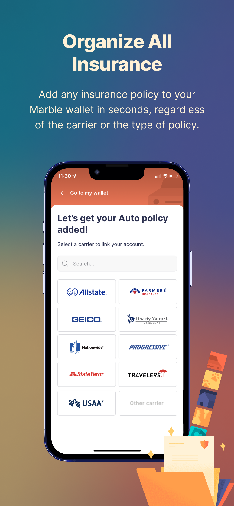
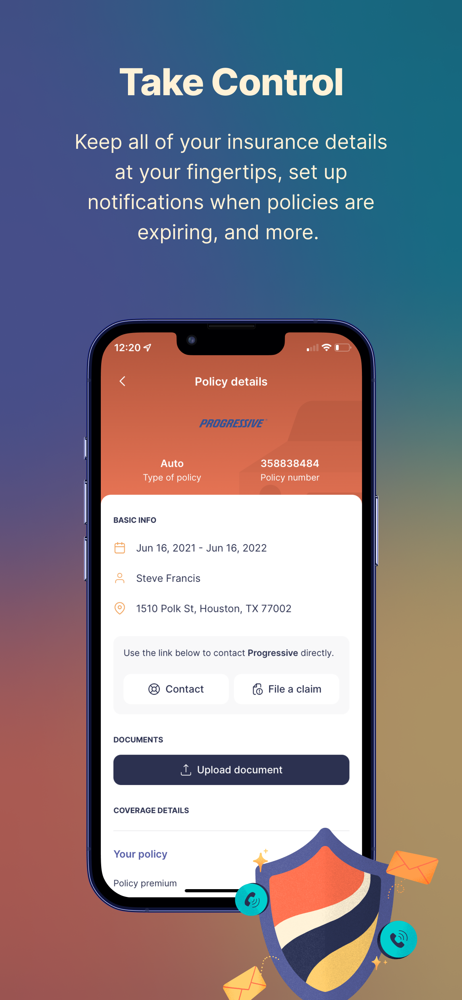
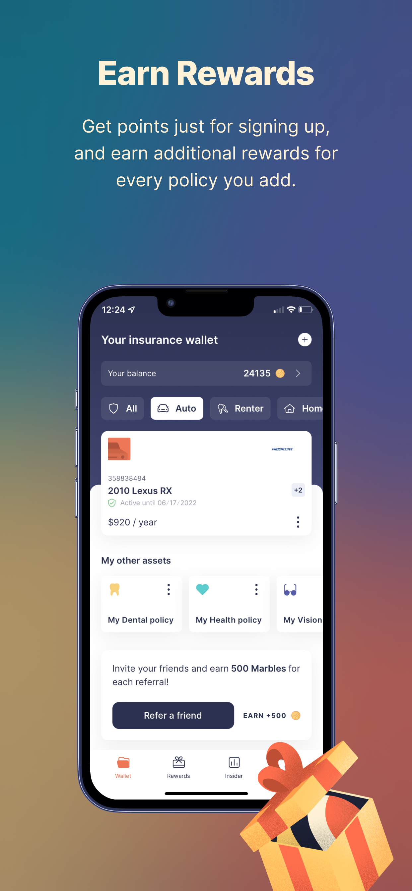
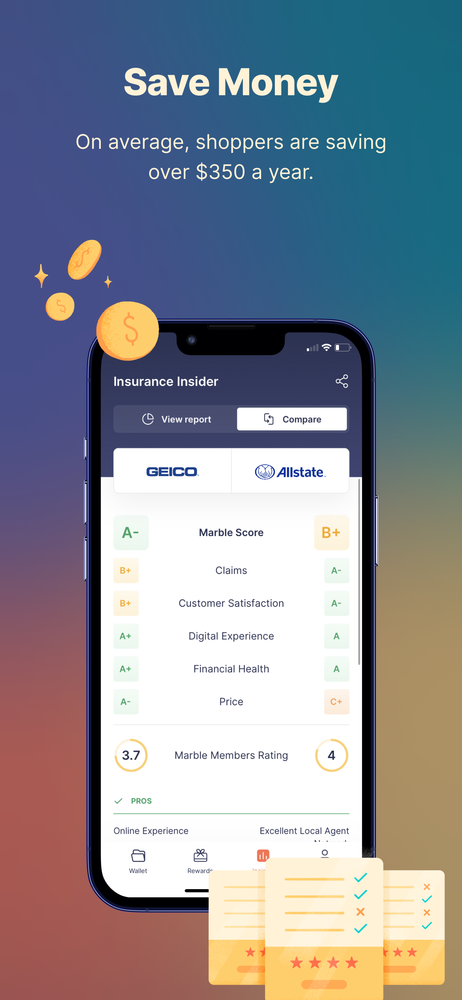
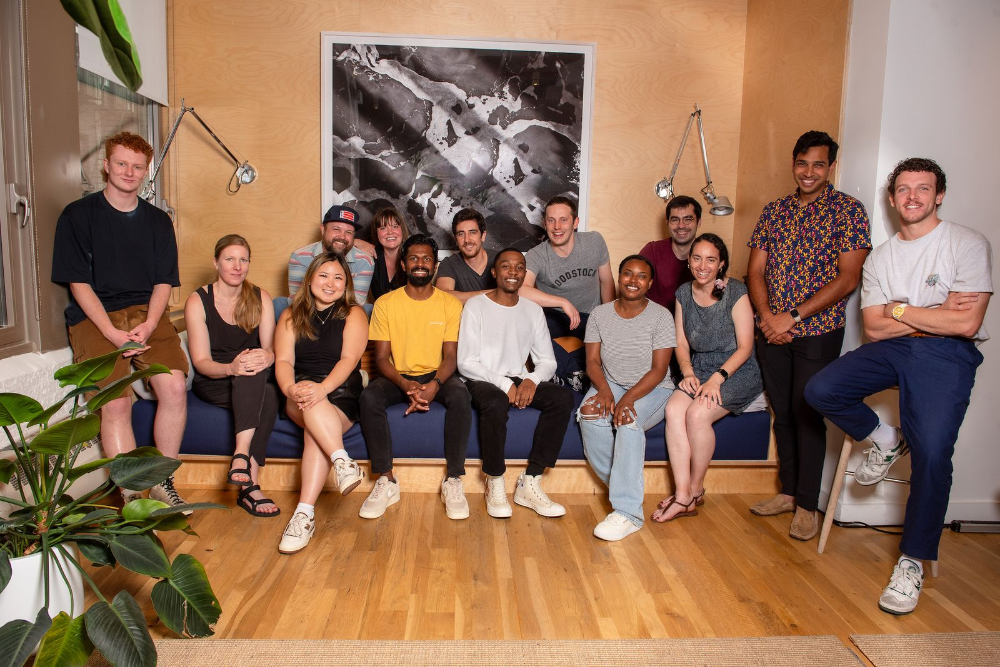

← Back to Home

Marble: The First Digital Wallet for Insurance
How I built an insurance platform from concept to 100K+ members to acquisition — revolutionizing how consumers and carriers interact.
How I built an insurance platform from concept to 100K+ members to acquisition — revolutionizing how consumers and carriers interact.
Insurance is one of the most fragmented, confusing, and opaque industries for consumers. People juggle multiple policies across different carriers, lose track of renewal dates, and have no idea if they're getting a good deal. There was no single place to organize, understand, and optimize your insurance — until Marble.
Stuart Winchester and I co-founded Marble in 2020 with a bold thesis: we could build the "Mint for insurance" — a digital wallet where consumers could see all their policies in one place, earn rewards for being responsible, and get smarter about their coverage over time.
The first challenge was deceptively simple: build a consumer hub that could organize all of a user's insurance policies in one place, regardless of carrier, and reward them for it. Think of it as "Mint for insurance" — a single dashboard for your auto, home, renters, pet, life, health, dental, and vision policies.
We built deep integrations using Canopy API and Sensible API (ML-powered document parsing) to automatically sync policy data from any carrier. The frontend was React with TypeScript and Apollo GraphQL, backed by Django with Python and Graphene on the server side. This architecture gave us the flexibility to move fast while maintaining data integrity across hundreds of insurance carriers.

Once we had users organizing their policies, the next challenge was keeping them engaged across multiple policy cycles. Insurance isn't something people think about every day — but we needed them to.
We built a comprehensive retention toolkit: a rewards and loyalty program, smart notifications for renewal windows, educational content about coverage gaps, and engagement tools that kept users coming back. The result was a 60%+ monthly active user retention rate — extraordinary for an insurance product.
The final piece of the puzzle: monetization through insurance sales. Because we had rich data on what users were paying, when their policies renewed, and where they had coverage gaps, we could surface the right insurance product at the perfect moment — the renewal window.
This data-driven approach to insurance distribution is what ultimately attracted The Zebra. In July 2024, they acquired Marble, and I transitioned to VP of Engineering to lead the integration of our technology stack into their consumer platform serving millions of users.

"The Z1 team has been incredibly supportive through the different projects I have worked with them on. I knew from day one of Marble that I wanted Z1 onboard."
— Adi Sundar, CTO of Marble
Building Marble required solving complex technical problems around insurance data aggregation, real-time policy syncing, and cross-carrier interoperability. Here's the stack we built:

Marble grew to a team of 12 at acquisition. Stuart Winchester led the business — marketing, operations, and agency partnerships. I led product and engineering, working closely with Z1 Digital as our design and development partner for strategy, branding, and product design.

"I was able to confidently deputize Z1 to take a snapshot of the existing web app and create a mobile app with very little distraction... something I have never seen done so well by an external team."
— Adi Sundar, CTO of MarbleOver four years, we built industry-leading tools that helped members save money on their insurance while helping carriers retain customers. Marble was acquired by The Zebra in July 2024, validating the thesis that a consumer-first, data-rich approach to insurance could create massive value.